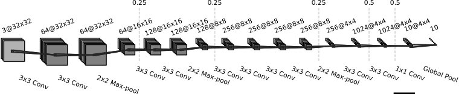

Experiments with AMSGrad
December 22, 2017
For ICLR 2018, two papers targeting problems with the ADAM update rule were submitted: On the Convergence of Adam and Beyond, and Fixing Weight Decay Regularization in Adam. The former points to a flaw in ADAM’s proof of convergence, and provides a simple solution. The resulting algorithm is called AMSGrad. The paper shows the advantages of AMSGrad on a synthetic task and a small number of experiments. However, it only uses small networks (1-layer MLP on MNIST, and a small ConvNet for CIFAR-10), and does not show test accuracy, the metric we ultimately care about more than cross-entropy loss. The ConvNet they train on CIFAR-10 is far from state-of-the-art results in terms of both train and test loss (we don’t know about accuracy).
Since I use ADAM in most of my experiments, I decided to evaluate AMSGrad on more realistic networks. Mind you, the models I trained here are still small, and not state-of-the-art, but definitely closer than what the paper shows.
To implement AMSGrad, I took the ADAM implementation of Lasagne and adapted it accordingly. I also added an option to disable ADAM’s bias correction:
def amsgrad(loss_or_grads, params, learning_rate=0.001, beta1=0.9,
beta2=0.999, epsilon=1e-8, bias_correction=True):
all_grads = get_or_compute_grads(loss_or_grads, params)
t_prev = theano.shared(utils.floatX(0.))
updates = OrderedDict()
# Using theano constant to prevent upcasting of float32
one = T.constant(1)
t = t_prev + 1
if bias_correction:
a_t = learning_rate*T.sqrt(one-beta2**t)/(one-beta1**t)
else:
a_t = learning_rate
for param, g_t in zip(params, all_grads):
value = param.get_value(borrow=True)
m_prev = theano.shared(np.zeros(value.shape, dtype=value.dtype),
broadcastable=param.broadcastable)
v_prev = theano.shared(np.zeros(value.shape, dtype=value.dtype),
broadcastable=param.broadcastable)
v_hat_prev = theano.shared(np.zeros(value.shape, dtype=value.dtype),
broadcastable=param.broadcastable)
m_t = beta1*m_prev + (one-beta1)*g_t
v_t = beta2*v_prev + (one-beta2)*g_t**2
v_hat_t = T.maximum(v_hat_prev, v_t)
step = a_t*m_t/(T.sqrt(v_hat_t) + epsilon)
updates[m_prev] = m_t
updates[v_prev] = v_t
updates[v_hat_prev] = v_hat_t
updates[param] = param - step
updates[t_prev] = t
return updatesFirst, let’s check if the implementation is correct. To this end, I ran the synthetic experiment as outlined in the paper in the stochastic setting. The resulting learning curves can be seen in the following plot.
This is fairly close to the plots in the paper, and to the re-implementation found here. ADAM incorrectly converges to 1, although the optimal value for x is -1. AMSGrad moves towards the best parameter.
I then experimented with four setups:
- Logistic Regression on MNIST.
- “CifarNet”, the CNN as described in the paper on CIFAR-10.
- “SmallVgg”, a small VGG-style network on CIFAR-10.
- “Vgg”, a larger VGG-style network on CIFAR-10.
For each of the setups, I ran 5 training runs for each combination of beta2 ∈ {0.99, 0.999} (as suggested in the paper), learning rate ∈ {0.01, 0.001, 0.0001}, and bias correction ∈ {on, off}. The batch size was set to 128 (as in the original paper). I trained for 150 epochs, with a linear decrease of the initial learning rate until it reaches 0 after epoch 150. I also used the standard left-right flip data augmentation used for CIFAR-10 experiments. The code to produce the experiments is available here.
I will focus on the “Vgg” setup first. While all setups have their own peculiarities, the conclusions we can draw from the results are similar.
Vgg on CIFAR-10
The ConvNet I used here has the following structure:

Each convolution is followed by batch normalisation and a rectifier activation function. The dashed lines indicate dropout with probabilities as indicated on top of the lines. For details, please see the code.
In the following plots, ADAM’s results will always be blue, AMSGrad’s results will be red. Lighter colors indicate that bias correction was turned off. Each line represents one training run.
Training Loss
In my experiments, training loss came very close to 0, compared to 0.3 in the paper. This is, of course, due to the much larger model I used. We also see that AMSGrad seems to converge faster in the last training phase if the learning rate is not too low, and that, most of the time, using bias correction helps convergence. In the end, however, all variants for most hyper-parameter settings (except when the learning rate is too low) converge to a similar final loss. If we zoom in, we see ADAM often overtaking AMSGrad in the final few epochs. Not that this matters much—it is the training loss, after all. However, the results with this kind of model (and training scheme) are different from the ones using the CifarNet model reported in the paper, where AMSGrad’s train loss was much lower than ADAM’s (see Fig. 2 in the paper, bottom left plot).
Validation Loss
The validation loss behaves differently. Here, we see AMSGrad consistently outperforming ADAM, especially in the later epochs. Both algorithms achieve a similar minimum validation loss (around epochs 20-25), but ADAM seems to overfit more from then on. This suggests that AMSGrad generalizes better, at least in terms of cross-entropy loss. Could this remedy the fact that ADAM often generalises worse than standard SGD? I would need to do some more experiments with standard SGD to answer this question.
Training Accuracy
Let’s look at accuracy. Accuracy is a more important metric than cross-entropy loss if we’re interested in classification. After all, we’re interested in how many examples our model classifies correctly. First, let’s look at training accuracy. For CIFAR-10, most powerful models reach close to 100% accuracy if trained properly (in fact, they can reach 100% accuracy even for random labels).
As we can see, training accuracy behaves very similarly to the training loss: AMSGrad converges faster than ADAM, but in the end, both achieve similar results. We can achieve almost 100% accuracy regardless of the algorithm used, given the hyper-parameters are not off by too much (again, learning rate should not be too low).
Finally, here comes the most interesting part—validation accuracy.
Validation Accuracy
But also, here comes the disappointment. Although AMSGrad gave a lower validation loss for all hyper-parameter configurations, for validation accuracy, the results are quite inconclusive. In some settings, ADAM performs better (lr = 0.01, b2=0.999), in others, AMSGrad (lr=0.001, b2=0.999). The best result over all configurations is achieved by ADAM with lr=0.001 and b2=0.99, but I don’t think this is significant. It seems that both algorithm perform equally well given the right hyper-parameter setting.
Discussion
The paper pointed out a critical flaw in the proof of convergence of ADAM, and showed a modified algorithm, AMSGrad, for which the proof holds. However, I found the experimental evaluation of the practical implications a bit limited. In the paper, the authors claim that (emphasis mine) “AMSGrad performs considerably better than ADAM on train loss and accuracy. Furthermore, this performance gain also translates into good performance on test loss.” Unfortunately, my experiments do not substantiate these claims:
- The performance on the training set is similar for both with respect to both loss and accuracy.
- Test (here, validation) loss is indeed lower for AMSGrad. However,
- the improvement in test loss does not translate to better test accuracy. (To be fair, the authors never claimed that.)
- The difference in behaviour between test loss and test accuracy raises critical questions: How well-suited is categorical cross-entropy for training networks for classification? Can we do better?
To clarify this: I do appreciate the authors work to point out weaknesses in ADAM. And though I did not yet check the proofs (as nobody did for ADAM until now, apparently), I am inclined to believe their conclusions. Also, the artificial examples do show that ADAM does not work under certain conditions. I think it’s a good paper.
However, the practical implications need more empirical exploration. The experiments I described in this post do not indicate a big practical difference between ADAM and AMSGrad.
Appendix
Here I show the results of the other setups.
Logistic Regression on MNIST
This setup is interesting because it reflects one of the experiments in the paper. The only difference is the schedule of the learning rate: they use α/√t, where t is the iteration, while I use the linear decay after each epoch, as outlined above. Let’s take a look at the results.
Training Loss
The first thing we see is that you can get much lower training loss if you follow the linear learning rate decay. In the paper, the training loss curve seems to flatten out at ~0.25 after 5000 iterations (~13 epochs with batch size 128), while in my experiments, depending on the hyper-parameters, it reaches 0.2. Another interesting observation is that ADAM gets the lowest final training loss in all configurations. This contradicts the results in the paper, especially the claim that AMSGrad is more robust to parameter changes than ADAM.
Validation Loss
Here, we see a different picture. AMSGrad usually gives the lowest validation loss (unless we use a too low learning rate). However, ADAM gets the lowest validation loss (by a tiny margin) for lr=0.002 and b2=0.99, but diverges afterwards.
Training Accuracy
Training Accuracy behaves very similarly to training loss, as does validation accuracy.
Validation Accuracy
From these results, it does not seem that AMSGrad enjoys a clear advantage over ADAM in a practical sense. The results depend on the choice of learning rate and beta2. Also, the results do not confirm the claim that AMSGrad is more robust to changes in hyper-parameters.
CifarNet on CIFAR-10
Here, I tried to re-implement the convolutional neural network as described in the paper. However, I could not reproduce the training curves. Depending on the learning rate and beta2, I either got better training loss (but worse validation loss), or both were worse than shown in the paper. It’s difficult to find the causes for such things, because the paper does not provide all the details of the model (e.g., we don’t know the initialisation scheme, and if L2 regularization was used). Anyways, here are the results.
Training Loss
We see that high learn rates fail to converge for both algorithms. In terms of training loss, the standard learning rate of 0.001 seems to work best. Although the lowest train loss is achieved by ADAM, the runs using AMSGrad seem to have less variance, but I think more experiments are necessary to confirm that.
Validation Loss
The validation loss diverges badly for the configurations that achieved the best training loss. Both algorithms are affected similarly. It seems that the models trained with a lower learning rate generalise much better. I’ll spoil here that the picture is very different when it comes to accuracy.
Training Accuracy
Training accuracy behaves similarly to training loss.
Validation Accuracy
Here we come to the more interesting part. Although we saw validation loss diverge badly, validation accuracy is actually best for these models. The ones that seemed to generalise better in terms of validation loss do not generalise better in terms of validation accuracy. This is important to keep in mind.
Depending on the setting, ADAM or AMSGrad out-perform each other by a tiny margin. More importantly, the model is much worse (only 78% val acc) compared to state-of-the-art models, no matter which optimisation algorithm was used.
SmallVgg on CIFAR-10
This is a smaller version of the model I used for my main experiments. It uses half the filters in each layer, and it uses only two conv layers in each block. I won’t interpret the results for these experiments, because they do not add anything new.